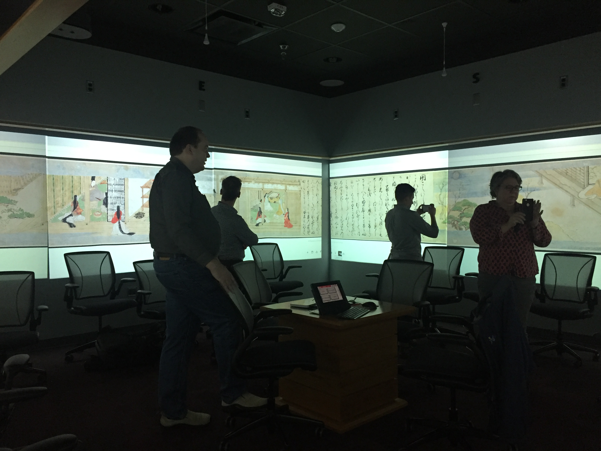
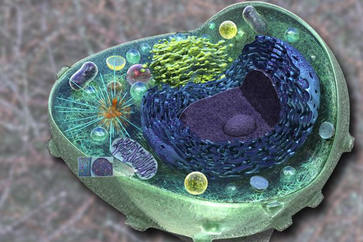

International Image Interoperability Framework
At Harvard University
The International Image Interoperability Framework (IIIF) at Harvard University website is a centralized resource for documentation, development, and use case scenarios…
About Harvard IIIF
Two APIs: One for image retrieval, one for image display.
The International Image Interoperability Framework (IIIF) defines universal standards for describing and delivering images over the web.
These standards are the result of collaborative efforts across universities, museums, libraries, and other cultural heritage institutions around the world.
{kind=link}
IIIF Presentation API
The role of the IIIF Presentation API is to describe a digital object that may contain hundreds of images in such a way that the user and the viewer software can successfully navigate the object.
{kind=link}
IIIF Image API
The IIIF Image API specifies a web service that returns an image in response to a standard HTTP or HTTPS request. The URI can specify the region, size, rotation, quality characteristics and format of the requested image.

IIIF IMAGE VIEWER
Mirador
Mirador is a configurable, extensible, and easy-to-integrate image viewer, which enables image annotation and comparison of images from repositories dispersed around the world.
IIIF PARTNERS AT HARVARD
Collaborators
Arts & Humanities Research Computing
Arts and Humanities Research Computing (informally known as DARTH) supports faculty research in the divisions of the arts and humanities and the humanistic social sciences.

HarvardX and VPAL
First used Mirador as a stand alone application in a series of courses.
IIIF PARTNERS AT HARVARD
Use Cases and Projects
Beyond Words: Illuminated Manuscripts in Boston Collections
Beyond Words: Illuminated Manuscripts in Boston Collections is the first exhibition to showcase highlights of illuminated manuscripts in the Boston area.
.jpg)
Mapping Color in History
Mapping Color in History brings together scientific data drawn from existing and ongoing material analyses of pigments in Asian painting in a historical perspective.